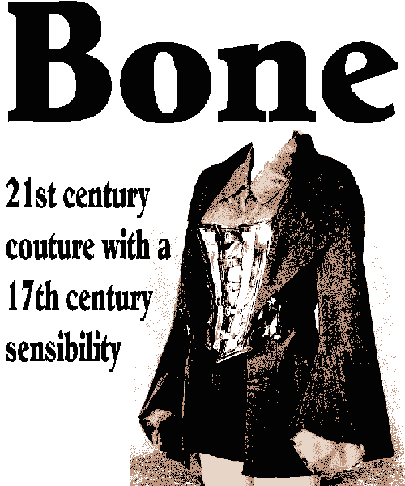

Dressing in Bone Couture is about dressing for pleasure. The range features artfully tailored and hand finished corsets, jackets and gowns inspired by 17th and 18th century female adventurers both real and fictional. The look is sexy, strong, eternal and uncluttered, cut away the rest and you are left with the Bone.
All prices in AU$ and include customer service and delivery within Australia, made to measure garment orders will require some form of deposit.
If you wish to stock Bone Couture for retail sale and wish a wholesale price list or require further pricing, stockist, or custom order enquiries E-mail Cyndy.